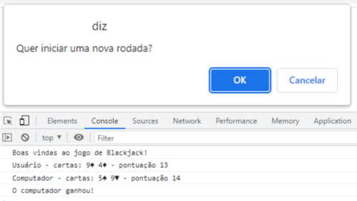
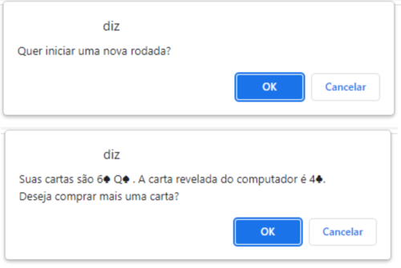
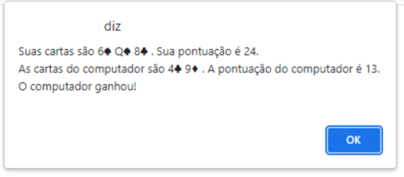

Blackjack foi um projeto desenvolvido no módulo 1 no curso de Desenvolvimento Web Full Stack na Labenu. Para melhor entendimento, vou explicar as regras do jogo:
- Existem dois jogadores, o computador e o usuário;
- O baralho contem 13 números e 4 naipes, resultando em 52 possibilidades de cartas diferentes.
- As cartas tem valor de acordo com o seu número, porem as cartas J, Q, K tem valor 10, e a carta A tem valor 11.
- O jogo inicia com cada jogador comprando duas cartas, a pontuação é a soma do valor das duas cartas, ganha o jogador que tiver a pontuação igual ou mais próxima de 21.
- Lembrando que se a pontuação do jogador passar de 21 pontos a vitória é do adversário.
Mostrar no console as cartas e pontuação de cada jogador, indicando se houve uma vitória, empate ou derrota:
JS
Agora os jogadores poderão decidir se querem ou não comprar mais cartas e as informações devem ser visualizadas no alert. Após a compra das duas primeiras cartas (que são obrigatórias), a primeira carta do computador é revelada antes do usuário decidir se vai ou não comprar mais cartas:
Cada carta comprada pelo usuário é somada a sua pontuação, ele poderá comprar cartas até atingir 21 pontos ou decidir parar de comprar.
